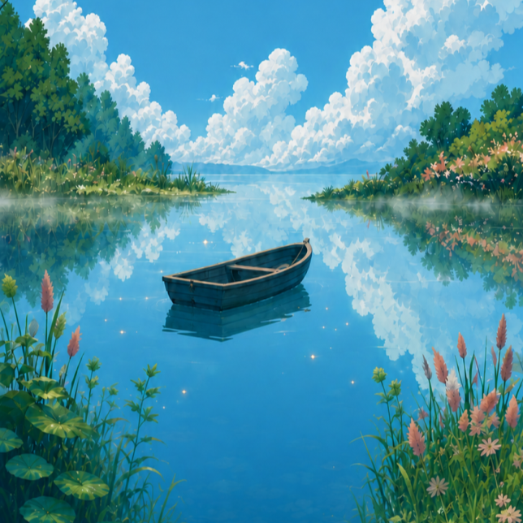
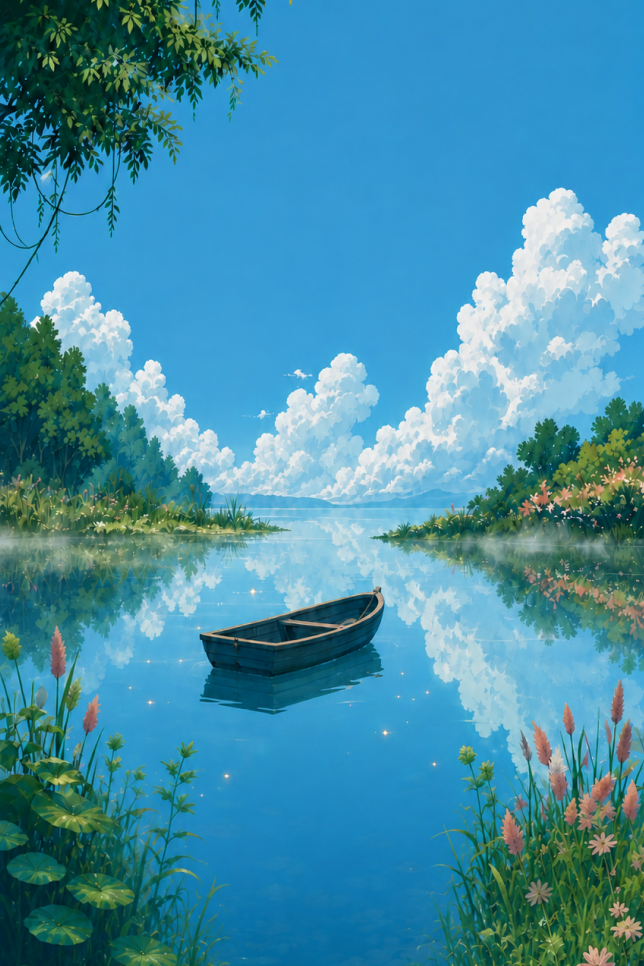

专注时光Focus timer
留出一段不被打扰的时间，陪伴学习、工作，或任何值得认真投入的事。
Make room for study, work, or anything that deserves your full attention.
A QUIETER WAY TO FOCUS

给专注一片风景，
给日常一点别处。
A quiet focus companion built around fishing, ambient worlds and small rewards.
开发中 / In development
正在为移动设备打造，正式上线信息将在这里公布。
In development for mobile. Release details will be shared here.

A LITTLE SPACE, JUST FOR YOU
别境将专注时光与安静的自然场景相连。伴着环境声开始一段专注，在垂钓与收集中发现小小的惊喜，慢慢积累属于自己的池塘。
Little Elsewhere connects focused time with a quiet natural world. Settle into ambient sounds, discover small rewards through fishing and collecting, and gradually make a pond your own.
INSIDE LITTLE ELSEWHERE
产品仍在开发中，功能以正式发布版本为准。
Features are in development and may change before release.
留出一段不被打扰的时间，陪伴学习、工作，或任何值得认真投入的事。
Make room for study, work, or anything that deserves your full attention.
让环境声成为日常的背景，在自然的声音中找到适合自己的节奏。
Find your own rhythm with ambient sounds inspired by the natural world.
让等待也有期待。通过垂钓与收集，给每一段投入的时间留下一点小小的收获。
Enjoy moments of discovery through fishing and collecting, with small rewards along the way.
让收集的点滴有一个归处，在自己的池塘里，看见专注慢慢积累的痕迹。
Give your discoveries a home in a personal pond that grows with your time and attention.
DEVELOPED BY JEVAI WORKS
An original digital product by Jevai Works, Qingdao, China.
产品咨询 Product enquiries